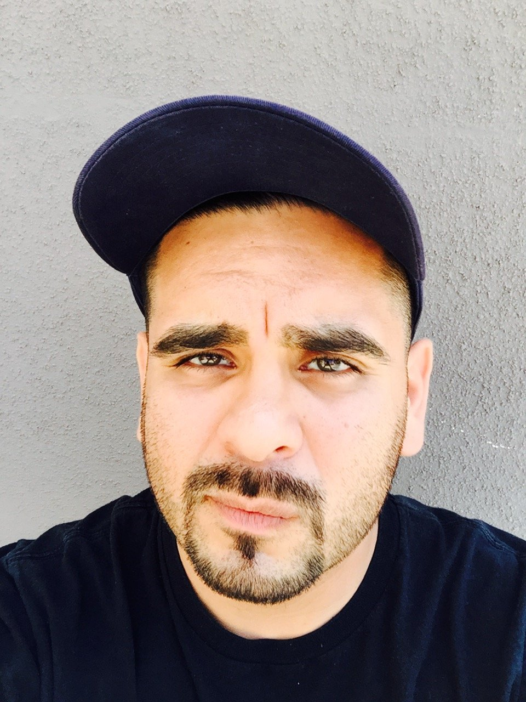
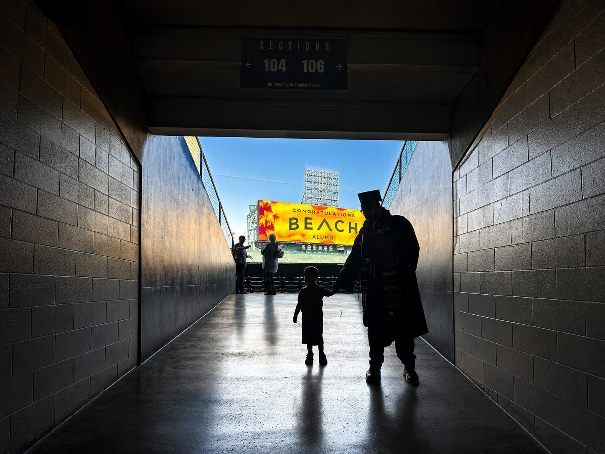
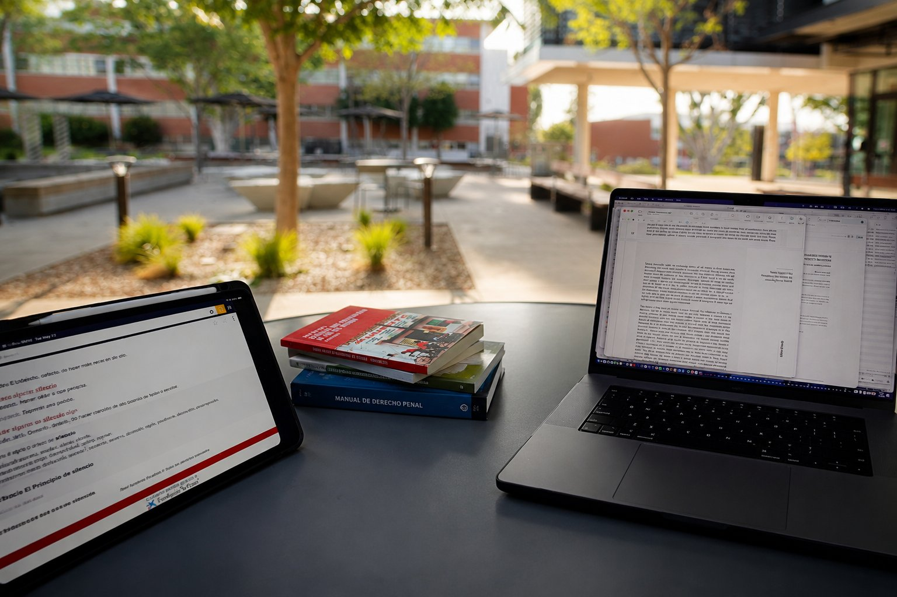
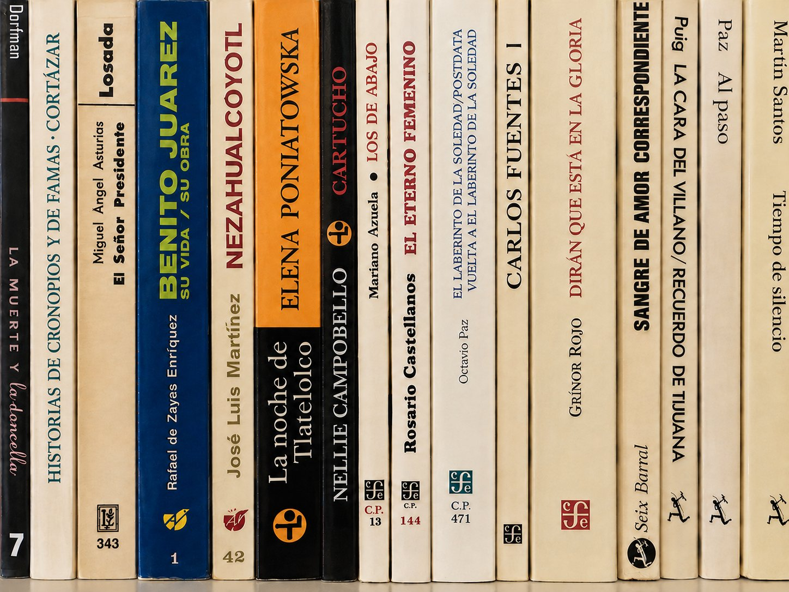
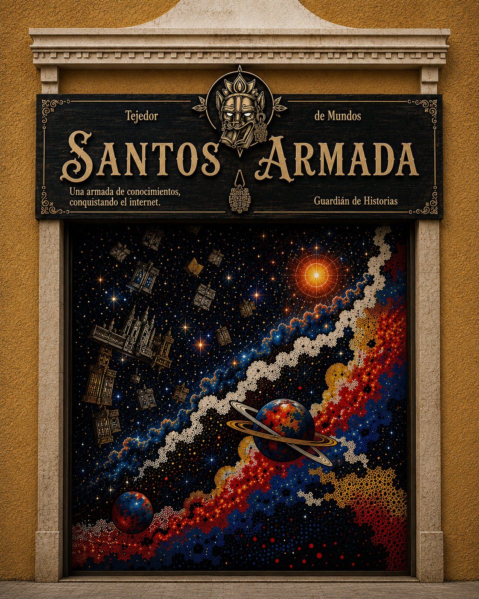

Christian Ricardo Santos
Quién Soy / Who I Am
I didn't arrive at language as a subject to study. I arrived at it as a need — my own, and the need of every Spanish speaker I've stood beside who needed someone to carry their words across a gap. That's where this began: not in a classroom, but in the moment of relief on someone's face when they realized they'd been understood.
My path has been eclectic and, at times, hard-won. I've been a performer, a father working full-time while going back to school, a first-generation college student figuring out the system as I went. Every version of that path was teaching me the same thing — that communication, done well, is an act of care.

El Camino / The Path
Before any of this, I was on stage — opening for Fat Joe and Redman, learning how to hold a room with words and rhythm. That instinct never left; it just found a new form.
I returned to school as a re-entry student, balancing classes with work and a young family. At Cerritos College I made the President's Honors List multiple semesters. At California State University, Long Beach, I completed my B.A. in Spanish with a minor in Translation Studies — graduating with consistent President's List honors and a cumulative GPA that reflected how seriously I took the return.
Now I'm a candidate in the M.A. in Spanish program at CSULB, expected to complete in Fall 2027. The doctorate is next — UC Irvine, UC Riverside, or wherever the path leads once the reading finishes shaping the question I haven't fully found yet.

El Trabajo / The Work
The work is not one thing. It's the late nights pulling threads of research into shape — turning scattered reading into essays, essays into a timeline of knowledge that didn't exist in my head a year ago. Right now, the work is preparing to pass my master's exams. It's gathering the materials that will eventually become a dissertation, even before I know exactly what that dissertation argues. It's diving fully into Spanish — not as a subject I studied once, but as a language I intend to inhabit completely, with Nahuatl and Italian as the next horizons.
The work is also the craft I already practice: freelance translation, interpreting in medical settings, and the slower work of preparing for CCHI certification. Judicial interpreting is also a possibility, but that remains to be seen. During my internship in Spanish translation, I moved across legal documents and museum education materials — including a project translating content for the Cabrillo Marine Aquarium — and felt, plainly, that this is the right life's work. In fall 2025, I completed my first subtitling project, translating a trailer for the video game South of Midnight — a small project that opened a new direction I'm still exploring: localization.
All of it runs on the same engine: every author I read, every essay I write, every hour spent with a dictionary open and a deadline close — it's one continuous act of building toward something I can't fully see yet, but trust is there.

La Investigación / The Research
My academic interests sit at the intersection of linguistics, literature, and archives — how language preserves memory, and how memory survives translation. My reading spans the breadth of Spanish-language literature, from the 13th century through contemporary voices like Yuri Herrera, alongside the academic journals I follow and plan to share here. I'm also drawn to history — specifically the Conquest of what is now called Latin America, and the formation of Mexico that followed. I don't yet have my dissertation question. I'm trusting that it will find me through the reading, the way most real questions do.

Por Qué Santos Armada / Why Santos Armada
Una armada de conocimientos. Sin fronteras.
This site is the record of that pursuit — the books, the essays, the interpreting work, the archive I'm building of my own becoming. Guardián de historias. Tejedor de mundos. Hijo de muchos sueños.